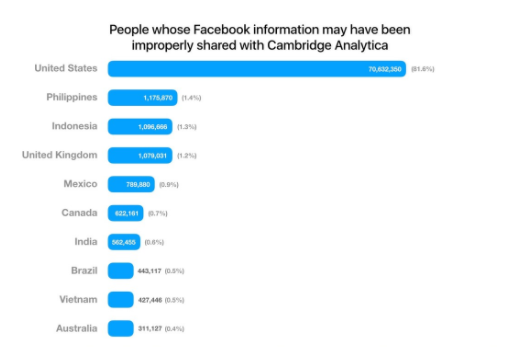

El robo de datos de Facebook afectó a 87 millones de usuarios, de estos al inicio no se sabía cuantos afectados eran de la importante Unión Europea, dato que ahora ya se conoce.
Son 2.7 millones de usuarios afectados perteneciente a la UE, sin embargo solo se sabe de forma concreta como es que se afectó a 1,08 millones de usuarios.
Algunos datos
70.6 millones de personas afectadas pertenecen a los Estados Unidos, 1.18 millones de Filipinas, 1.09 millones de Indonesia, estos son los paises mas afectados por este escándalo. Esta es la gráfica que Facebook reveló.
El robo de datos es aún más inquietante si tenemos en cuenta que la empresa se había adherido al tratado Privacy Shield entre Estados Unidos y la Unión Europea. Este sistema simplifica el proceso de autorizar la transferencia de los datos personales de los ciudadanos de la UE a través del Atlántico.
Sin duda este caso dará mas que hablar en un futuro cuando las investigaciones tengan más bases y mejores pruebas, todo indica que Facebook pagará muy caro todo lo que ha venido haciendo desde hace ya algunos años y que ahora se ha comprobado.